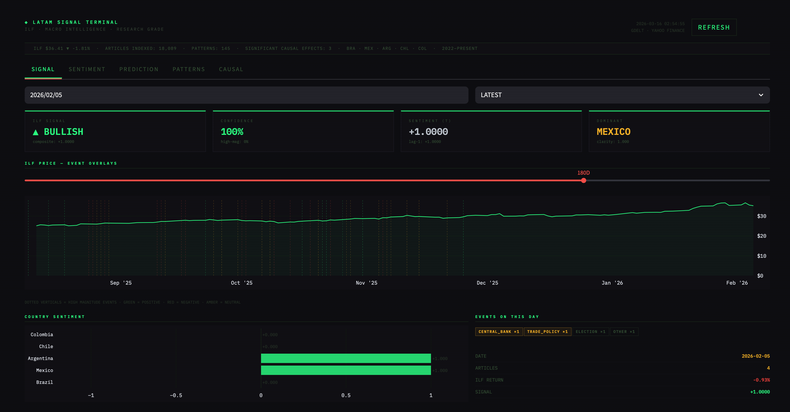

Quantitative Finance · Columbia University
News Sentiment and Emerging Market Returns
I investigate whether media sentiment extracted from 18,089 English-language financial news articles predicts excess returns on the iShares Latin America 40 ETF (ILF) across Brazil, Mexico, Argentina, Chile, and Colombia from 2022 to 2026. After stripping global factor exposure via OLS residualization, I estimate average treatment effects with backdoor adjustment and placebo testing. A gradient boosting classifier achieves 52.7% directional accuracy out-of-sample. Two patterns survive causal scrutiny: neutral Brazilian central bank coverage and negative Colombian protest coverage, both associated with positive ILF residuals — suggesting LatAm news carries incremental information beyond global factors, though the predictable component is modest.
